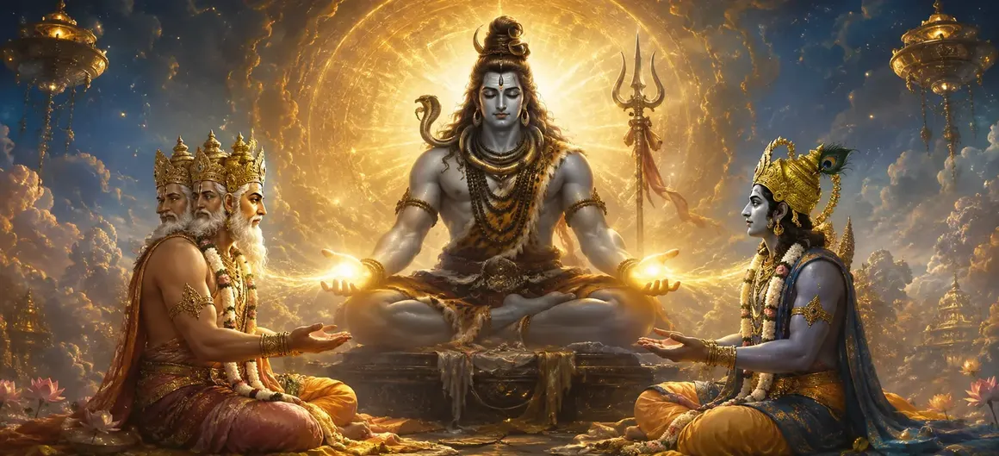

ब्रह्मा और विष्णु की रचना
वायवीय संहिता के अध्याय 13 में, भगवान वायु भगवान ब्रह्मा और भगवान विष्णु की महत्वपूर्ण दिव्य अभिव्यक्ति का वर्णन करते हैं, उनकी उपस्थिति और सर्वोच्च शिव द्वारा उन्हें सौंपे गए विशिष्ट ब्रह्मांडीय कर्तव्यों का विवरण देते हैं।
यह अध्याय इस बात पर प्रकाश डालता है कि कैसे सार्वभौमिक सृजन और संरक्षण के प्राथमिक वास्तुकार दैवीय कृपा के माध्यम से अस्तित्व में आते हैं।
भक्तों को पवित्र त्रिमूर्ति की मूलभूत एकता के बारे में गहरी जानकारी प्राप्त होती है।
अध्याय 13 व्यापक हाइलाइट्स
दिव्य स्वरूप
ब्रह्मा और विष्णु का चमत्कारी प्राकट्य।
लौकिक आयोग
सृजन और संरक्षण कर्तव्यों का समनुदेशन.
शिव का सर्वोच्च स्रोत
शिव को दोनों देवताओं के परम नियंत्रक के रूप में पहचानना।
त्रिमूर्ति सद्भाव
ब्रह्मांडीय व्यवस्था के भीतर सहयोगी भूमिकाओं को समझना।
अनुग्रह द्वारा सशक्तिकरण
ब्रह्मांडीय कार्यों को सक्षम करने वाली दिव्य ऊर्जा का संचार।
रुद्रों का प्रवेश द्वार
रुद्रों के प्राकट्य की कथा तैयार करना
इस अध्याय में मुख्य विषय
- 01भगवान ब्रह्मा का प्राकट्य→
- 02भगवान विष्णु का प्राकट्य→
- 03परम शिव से निर्देश और मार्गदर्शन→
- 04ब्रह्मा को सृष्टि रचना की भूमिका सौंपना→
- 05विष्णु को संरक्षण की भूमिका सौंपना→
- 06देवताओं को दिव्य ऊर्जा से सशक्त बनाना→
- 07पवित्र त्रिमूर्ति की एकता को पहचानना→
- 08लौकिक उत्तरदायित्वों की स्वीकृति→
- 09दैवीय आयोग का आध्यात्मिक महत्व→
- 10रुद्रों के प्रकटीकरण में परिवर्तन→
भगवान ब्रह्मा का प्राकट्य
भगवान ब्रह्मा सर्वोच्च बुद्धि और द्वितीयक सृजन की क्षमता से संपन्न सर्वोच्च शिव की रचनात्मक शक्ति के माध्यम से प्रकट होते हैं।
उनका जन्म सक्रिय सार्वभौमिक जनसंख्या की शुरुआत का प्रतीक है।
भगवान विष्णु का प्राकट्य
भगवान विष्णु दिव्य इच्छा द्वारा स्थापित ब्रह्मांडीय व्यवस्था को बनाए रखने, सुरक्षा करने और बनाए रखने के लिए प्रकट होते हैं।
वह सर्वोच्च जीविका और असीम करुणा का प्रतीक है।
परम शिव से निर्देश और मार्गदर्शन
सर्वोच्च शिव दोनों देवताओं को उनके लौकिक कर्तव्यों के संबंध में गहन ज्ञान और निर्देश प्रदान करते हैं।
उन्हें धर्म और निष्ठा के साथ अपनी भूमिका निभाने का निर्देश दिया जाता है।
ब्रह्मा को सृष्टि रचना की भूमिका सौंपना
भगवान ब्रह्मा को दुनिया भर में जीवित प्राणियों, ऋषियों, पूर्वजों और जीवन के विविध रूपों को उत्पन्न करने के लिए औपचारिक रूप से नियुक्त किया गया है।
विष्णु को संरक्षण की भूमिका सौंपना
भगवान विष्णु को ब्रह्मांडीय संतुलन बनाए रखने, धर्म की रक्षा करने और सभी निर्मित संस्थाओं का पोषण करने का काम सौंपा गया है।
देवताओं को दिव्य ऊर्जा से सशक्त बनाना
कोई भी देवता स्वतंत्र रूप से कार्य नहीं करता; दोनों परम शिव की अनंत कृपा और ऊर्जा से निरंतर सशक्त हैं।
पवित्र त्रिमूर्ति की एकता को पहचानना
पाठ इस बात पर जोर देता है कि ब्रह्मा, विष्णु और रुद्र (शिव) अलग-अलग ब्रह्मांडीय कार्यों को पूरा करने वाली एक सर्वोच्च दिव्य वास्तविकता की अभिव्यक्ति हैं।
लौकिक उत्तरदायित्वों की स्वीकृति
ब्रह्मा और विष्णु परम शिव के प्रति गहरी श्रद्धा से झुकते हुए विनम्रतापूर्वक अपने-अपने आदेश स्वीकार करते हैं।
दैवीय आयोग का आध्यात्मिक महत्व
इस दिव्य विधान को समझने से साधकों को यह एहसास करने में मदद मिलती है कि सभी ब्रह्मांडीय शक्ति सर्वोच्च भगवान से उत्पन्न होती है।
रुद्रों के प्रकटीकरण में परिवर्तन
अध्याय 13 का समापन करते हुए, भगवान वायु उग्र और दयालु रुद्रों की आगामी उपस्थिति के लिए कथा तैयार करते हैं।
अध्याय 13 की विस्तारित प्रमुख शिक्षाएँ
ब्रह्मा का जन्म
संसार के रचयिता की अभिव्यक्ति.
विष्णु का संरक्षण
अस्तित्व के पालनकर्ता का उद्भव.
शिव की आज्ञा
दोनों देवताओं को नियंत्रित करने वाला सर्वोच्च समन्वय।
त्रिमूर्ति सद्भाव
लौकिक कर्तव्यों का सहयोगात्मक निष्पादन।
दिव्य सशक्तिकरण
अनंत कृपा ब्रह्मांडीय कार्यों को बढ़ावा देती है।
अध्याय 14 का प्रवेश द्वार
रुद्रों के प्राकट्य की तैयारी।
विस्तारित आध्यात्मिक चिंतन
जब हम भगवान ब्रह्मा और भगवान विष्णु को सर्वोच्च शिव के मार्गदर्शन में सृजन और संरक्षण के अपने महान कर्तव्यों को निभाते हुए देखते हैं, तो हम समझते हैं कि सच्चा नेतृत्व दिव्य समर्पण और लौकिक कर्तव्य के वफादार निष्पादन में निहित है। ब्रह्मांड में प्रत्येक भूमिका एक पवित्र उद्देश्य को पूरा करती है।
अध्याय 13 का संदेश जीना
अपने कार्य को ईश्वर की पवित्र सेवा के रूप में देखते हुए, अपनी दैनिक जिम्मेदारियों को समर्पण के साथ पूरा करें।
सर्वोच्च शिव के अधीन उनकी एकता को पहचानते हुए, सभी आध्यात्मिक मार्गों और दिव्य पहलुओं के प्रति सम्मान पैदा करें।
जीवन को विनम्रता के साथ स्वीकार करें, यह स्वीकार करते हुए कि सारी ताकत और क्षमता सर्वोच्च कृपा से आती है।
विस्तृत प्रमुख आध्यात्मिक अवधारणाएँ
भगवान ब्रह्मा की दिव्य अभिव्यक्ति.
भगवान विष्णु का दिव्य स्वरूप.
पवित्र त्रिमूर्ति की स्थापना.
लौकिक उत्तरदायित्वों का प्रवर्तन।
भगवान शिव की सर्वोच्च संप्रभुता.
ईश्वरीय इच्छा का समर्पित निष्पादन।
विस्तृत अध्याय सारांश
वायवीय संहिता अध्याय 13 ('ब्रह्मा और विष्णु की रचना') भगवान शिव की सर्वोच्च इच्छा के तहत भगवान ब्रह्मा और भगवान विष्णु की चमत्कारी अभिव्यक्ति का वर्णन करता है। इसमें उनके कमीशन का विवरण दिया गया है - ब्रह्मा को द्वितीयक रचना और विष्णु को सार्वभौमिक संरक्षण के साथ सौंपा गया है - जबकि परम शिव को अंतिम स्रोत और नियंत्रक के रूप में स्थापित किया गया है। यह अध्याय ब्रह्मांड के सक्रिय प्रशासन के साथ ब्रह्मांडीय प्रकटीकरण को जोड़ता है और अध्याय 14 में रुद्रों की अभिव्यक्ति के लिए साधक को तैयार करता है।
अक्सर पूछे जाने वाले प्रश्न
1. वायवीय संहिता अध्याय 13 ('ब्रह्मा और विष्णु की रचना') का प्राथमिक विषय क्या है?
अध्याय सृष्टि और संरक्षण की देखरेख के लिए सर्वोच्च शिव द्वारा भगवान ब्रह्मा और भगवान विष्णु की दिव्य अभिव्यक्ति और कमीशन का वर्णन करता है।
2. इस वृत्तांत में भगवान ब्रह्मा और भगवान विष्णु की उत्पत्ति कैसे हुई?
वे ब्रह्मांड के लिए विशिष्ट ब्रह्मांडीय जिम्मेदारियों को निभाते हुए, भगवान शिव की सर्वोच्च इच्छा और ऊर्जा के माध्यम से प्रकट होते हैं।
3. ब्रह्मा और विष्णु को कौन से विशिष्ट कर्तव्य सौंपे गए हैं?
भगवान ब्रह्मा को द्वितीय सृजन (सृष्टि) का कर्तव्य सौंपा गया है, जबकि भगवान विष्णु को ब्रह्मांड के संरक्षण और रखरखाव (स्थिति) का काम सौंपा गया है।
4. ब्रह्मा और विष्णु के संबंध में परम शिव की क्या भूमिका है?
सर्वोच्च शिव दोनों देवताओं के अंतिम स्रोत, निर्माता और नियंत्रक बने हुए हैं, जो उन्हें अपने ब्रह्मांडीय कार्यों को निष्पादित करने के लिए दिव्य ऊर्जा से सशक्त बनाते हैं।
5. ब्रह्मा और विष्णु की उत्पत्ति की समझ भक्तों के लिए क्यों महत्वपूर्ण है?
यह सर्वोच्च शिव के अधीन पवित्र त्रिमूर्ति (त्रिमूर्ति) की पदानुक्रमित एकता स्थापित करता है, भक्ति और दार्शनिक स्पष्टता को गहरा करता है।
6. इस अध्याय के बाद नेविगेशन के लिए अगला अध्याय कौन सा है?
नेविगेशन के लिए अगला अध्याय 'रुद्रों का प्रकटीकरण' है।
"सर्वोच्च शिव द्वारा सशक्त, भगवान ब्रह्मा सृजन करते हैं और भगवान विष्णु ब्रह्मांडीय व्यवस्था का संरक्षण करते हैं, अपने पवित्र कर्तव्यों को पूर्ण सद्भाव में पूरा करते हैं।"
वायवीय संहिता के माध्यम से जारी रखें
अध्याय 13 समाप्त। अगले अध्याय, रुद्रों का प्रकटीकरण, को जारी रखें।